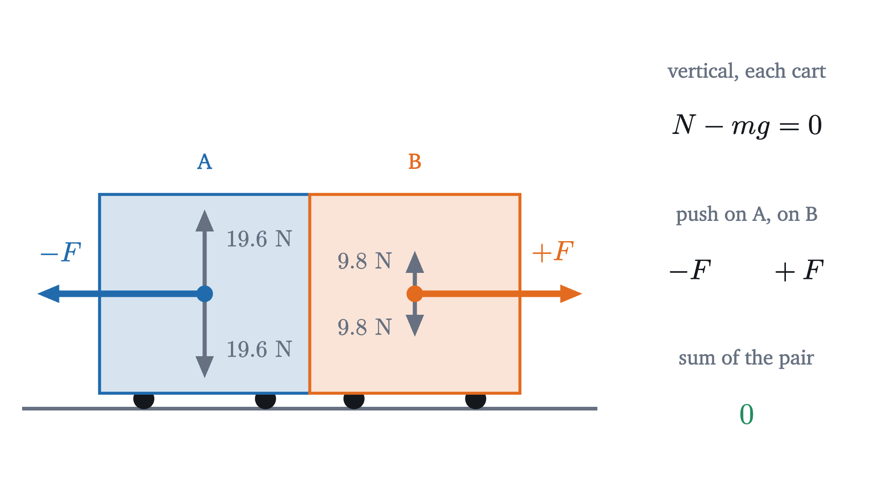

Momentum and collisions: what survives a crash
Momentum, impulse and Newton's third law, and how they fix the outcome of sticky and bouncy collisions when energy alone gives the wrong answer.
AssumesNewton's second law, F = ma: what force really doesConservation of energy: a roller coaster's bookkeeping
A 2 kg cart rolls along a level track at 3 m/s and runs into a 1 kg cart that is standing still. Strips of Velcro on the bumpers make them latch together. How fast does the pair move afterward?
The last lesson suggests a method. The moving cart has kinetic energy $\tfrac12 mv^2 = \tfrac12(2)(3)^2 = 9$ J. If energy is conserved, the 3 kg pair has 9 J afterward, so $\tfrac12(3)v^2 = 9$ and $v = 2.45$ m/s. Run the experiment and the pair moves off at 2.00 m/s, every time. The energy method is off by more than a fifth, and the kinetic energy afterward is $\tfrac12(3)(2)^2 = 6$ J: a third of it has gone missing in a collision that takes less than a tenth of a second.
So kinetic energy does not survive this crash. But the outcome is the same on every run, so some rule fixes it, and the way to find the rule is to look for a quantity that does survive.
Four collisions, and a search for what stays the same
Keep the same two carts, A with mass 2 kg and B with mass 1 kg, on a track with so little friction that a cart given a push keeps its speed for the length of the track. Take positions along the track as $x$, increasing to the right, so that a velocity is positive for motion to the right and negative for motion to the left. We can change the bumpers (Velcro, or springs that make the carts bounce apart) and the starting velocities. Here are four runs.
| Run | Bumpers | A before | B before | A after | B after |
|---|---|---|---|---|---|
| 1 | Velcro | $+3$ m/s | $0$ | $+2$ m/s | $+2$ m/s |
| 2 | springs | $+3$ m/s | $0$ | $+1$ m/s | $+4$ m/s |
| 3 | Velcro | $+3$ m/s | $-3$ m/s | $+1$ m/s | $+1$ m/s |
| 4 | springs | $+3$ m/s | $-3$ m/s | $-1$ m/s | $+5$ m/s |
Pause and try
For each run, compute three candidate totals before and after the collision: the sum of the velocities, the sum of mass times velocity, and the sum of $\tfrac12 \times$ mass $\times$ velocity squared. Which total is the same before and after in all four runs?
Show answerHide answer
Sum of velocities: $3 \to 4$, $3 \to 5$, $0 \to 2$, $0 \to 4$. It changes every time. Sum of $mv$ (in kg·m/s): run 1, $6 + 0 \to 4 + 2$; run 2, $6 + 0 \to 2 + 4$; run 3, $6 - 3 \to 2 + 1$; run 4, $6 - 3 \to -2 + 5$. It is 6, 6, 3 and 3 before, and the same after. Sum of $\tfrac12 mv^2$ (in J): $9 \to 6$, $9 \to 9$, $13.5 \to 1.5$, $13.5 \to 13.5$. It survives with spring bumpers and not with Velcro.
The sum of mass times velocity is unchanged in every run, whatever the bumpers are made of, provided we keep the signs: in run 4, cart A ends up moving left and contributes $-2$. The reason has to come from Newton’s laws, since those govern the carts at every instant, including the instants of contact that the table skips.
Impulse: what a force does over a time
In the last lesson we asked what a force accomplishes over a distance, and the answer was a change in $\tfrac12 mv^2$. Ask the same question about a force acting for a time.
Suppose a constant net force $F$ acts on an object of mass $m$ for a time $\Delta t$. By Newton’s second law the acceleration is $a = F/m$, and with constant acceleration the velocity changes by $\Delta v = a\,\Delta t$. Multiply by $m$:
The left side is the change in $mv$, the combination that the table singled out.
During a collision the force is far from constant. The repair is the one used for work in the last lesson: cut the contact time into slices so short that the force hardly changes during each, apply the theorem to each slice, and add. The momentum changes add up to the total change, and the impulses add up to the area under the graph of force against time. Making “hardly changes” exact is a limit that belongs to integral calculus; for a force that is constant on each of a finite number of slices the result is fully proved, and that is the form we use.
One consequence is already useful. A given change of momentum can be delivered by a large force briefly or a small force for longer, since only the product $F\,\Delta t$ is fixed. Airbags and crumple zones work by lengthening $\Delta t$.
The third law makes the total constant
Now look inside the collision of run 2. With spring bumpers of realistic stiffness, the carts are in contact for about 60 thousandths of a second.
Each cart feels three forces. Its weight and the normal force from the track are vertical and cancel, since the cart has no vertical acceleration. The third is the push of the other cart’s bumper, which is horizontal. Newton’s third law says that these two pushes are equal in size and opposite in direction at every instant: if A pushes B forward with force $F$, then B pushes A backward with force $-F$.

The two pushes also last exactly as long as each other, because they are two descriptions of one contact. So in every slice of time the impulse on A is minus the impulse on B, and whatever momentum B gains, A loses.
The figure models the bumper as an ideal spring, which gives the force its smooth hump. Rubber, Velcro or crumpling steel would give other curves, and in each case the curve for A would be the mirror image of the curve for B.
Nothing was assumed about the nature of the force $F$, which is why Velcro and springs obey the same rule. If the net external force is not zero, the same proof shows that the total momentum changes by the external impulse, $F_{\text{ext}}\,\Delta t$. For more than two objects the internal forces still cancel in third-law pairs, and the theorem holds for the whole collection.
A real track has some friction, which is an external force. It does little harm, because the collision is so brief: a rolling friction force of 0.05 N acting for 0.06 s delivers 0.003 N·s, against the 4 N·s the carts exchange. Momentum conservation across a collision is an excellent approximation whenever the collision forces are much larger than the external ones.
Sticky collisions and the missing energy
With the law in hand, the opening question is one line. In a perfectly inelastic collision the objects move off together with a common velocity $v$. Let their masses be $m_1, m_2$ and their velocities beforehand $u_1, u_2$. Conservation of momentum gives $m_1 u_1 + m_2 u_2 = (m_1 + m_2)\,v$, so
For run 1, $v = (2 \times 3 + 0)/3 = 2$ m/s. For run 3, $v = (6 - 3)/3 = 1$ m/s. Both match the table.
Now the energy. Write $M = m_1 + m_2$. The kinetic energy before minus the kinetic energy after is
Put everything over $2M$. The numerator is $(m_1 u_1^2 + m_2 u_2^2)(m_1 + m_2) - (m_1 u_1 + m_2 u_2)^2$, and when it is multiplied out the terms $m_1^2 u_1^2$ and $m_2^2 u_2^2$ cancel, leaving $m_1 m_2\,(u_1^2 + u_2^2 - 2u_1 u_2)$. So
This is never negative, and it is zero only if $u_1 = u_2$, in which case the objects never collide. Every sticky collision loses kinetic energy, and the amount depends only on the masses and the velocity of approach $u_1 - u_2$. For run 1 it is $\tfrac12 \cdot \tfrac{2}{3} \cdot 3^2 = 3$ J, the 3 J that went missing at the start. For run 3 it is $\tfrac12 \cdot \tfrac23 \cdot 6^2 = 12$ J, which is $13.5 - 1.5$.
The energy has gone into deforming the bumpers, into sound, and mostly into thermal energy. You might object that this is suspicious: the internal forces cancel well enough to leave momentum alone, so why do they not leave energy alone? The answer is that the two pushes act for the same time and not over the same distance. While the bumpers are being crushed the gap between the carts is closing, so cart A travels farther than cart B. The force slows A over a longer distance than it speeds B up, and A loses more kinetic energy than B gains. Impulse is force times time, and cancels. Work is force times distance, and need not.
Bouncy collisions: two conditions, two unknowns
When the carts separate after the collision there are two unknown velocities, $v_1$ and $v_2$, and momentum conservation is only one equation. A second condition has to come from what the bumpers are made of.
The cleanest case is the one where no kinetic energy is lost. A collision is elastic if the total kinetic energy is the same after as before. Steel balls and good spring bumpers come close, and runs 2 and 4 are elastic, as their 9 J and 13.5 J totals showed.
For an elastic collision we have
The second equation is quadratic, and substitution is unpleasant. A better route is to collect the terms for each object on one side:
Each side of the second equation is a difference of squares, and it contains the corresponding side of the first as a factor: $u_1^2 - v_1^2 = (u_1 - v_1)(u_1 + v_1)$. Divide the second equation by the first. This is allowed when $u_1 \ne v_1$, that is, when the collision changes the velocities at all. What remains is $u_1 + v_1 = v_2 + u_2$, or
In an elastic collision the relative velocity reverses: the objects separate at the speed with which they approached. Check run 2: approach at $3 - 0 = 3$ m/s, separation at $4 - 1 = 3$ m/s. (The excluded case, $v_1 = u_1$ and $v_2 = u_2$, also satisfies both conservation laws. It describes the carts passing through each other untouched.)
Now the problem is linear. Substitute $v_2 = v_1 + u_1 - u_2$ into the momentum equation and solve for $v_1$, then for $v_2$.
For run 4, $v_1 = \bigl((2 - 1)(3) + 2(1)(-3)\bigr)/3 = -1$ m/s and $v_2 = \bigl((1 - 2)(-3) + 2(2)(3)\bigr)/3 = +5$ m/s, as measured.
Pause and try
A moving object strikes an object at rest, elastically. Without the formulas, guess the outcome in three cases, then check each guess with $u_2 = 0$: (a) the masses are equal; (b) the moving object is far heavier, like a bowling ball hitting a ping-pong ball; (c) it is far lighter, the ping-pong ball hitting the bowling ball.
Show answerHide answer
With $u_2 = 0$: $v_1 = \dfrac{m_1 - m_2}{m_1 + m_2}u_1$ and $v_2 = \dfrac{2m_1}{m_1 + m_2}u_1$. (a) $m_1 = m_2$: $v_1 = 0$ and $v_2 = u_1$. The moving object stops dead and the other leaves with its velocity. (b) $m_1 \gg m_2$: $v_1 \approx u_1$ and $v_2 \approx 2u_1$. The heavy object barely notices, and the light one leaves at twice the heavy one’s speed, which most people do not guess. (c) $m_1 \ll m_2$: $v_1 \approx -u_1$ and $v_2 \approx 0$. The light object bounces back at nearly its original speed.
With masses 10 kg and 1 kg and $u_1 = 2$ m/s, case (b) gives $v_1 = \tfrac{9}{11}(2) = 1.64$ m/s and $v_2 = \tfrac{20}{11}(2) = 3.64$ m/s, and case (c) gives $v_1 = -1.64$ m/s and $v_2 = \tfrac{2}{11}(2) = 0.36$ m/s.
Most real collisions lie between the two extremes: the objects separate, more slowly than they approached. Momentum conservation still holds, and the second condition must be measured.
The center of mass does not notice the collision
Momentum conservation says $m_1 v_1 + m_2 v_2$ is constant. Divide by the total mass and it says that a certain average velocity is constant. That average is the velocity of a definite point.
If the objects move for a time $\Delta t$ with velocities $v_1, v_2$, their positions change by $v_1\Delta t$ and $v_2\Delta t$, so $x_{\text{cm}}$ changes by $(m_1 v_1 + m_2 v_2)\,\Delta t/(m_1 + m_2)$. The velocity of the center of mass is therefore
Since $p_{\text{total}}$ is constant when no net external force acts, so is $v_{\text{cm}}$. The carts change velocity abruptly, and the center of mass moves through the collision at a steady velocity. For runs 1 and 2 it is $6/3 = 2$ m/s throughout. The common velocity after a perfectly inelastic collision is exactly $v_{\text{cm}}$, because once the carts are stuck together the center of mass moves with them.
So watch the collision from a camera that rides along with the center of mass. Changing to an observer who moves at a constant velocity $V$ subtracts $V$ from every velocity and leaves every force and every acceleration unchanged, so Newton’s laws hold for that observer as well. In the frame moving at $v_{\text{cm}} = 2$ m/s, cart A approaches at $3 - 2 = +1$ m/s and cart B at $0 - 2 = -2$ m/s. Their momenta are $+2$ and $-2$ kg·m/s, total zero.
Pause and try
In this frame the total momentum is zero before the collision, so it is zero after. What does that force a sticky collision to look like? And an elastic one, given that the relative velocity reverses?
Show answerHide answer
Sticky: the pair has a common velocity $v$ and momentum $3v = 0$, so $v = 0$. Both carts stop dead, and all the kinetic energy in this frame, $\tfrac12(2)(1)^2 + \tfrac12(1)(2)^2 = 3$ J, is lost. Elastic: total momentum zero requires $2v_A + v_B = 0$, and reversal requires $v_A - v_B = -3$. So $v_A = -1$ and $v_B = +2$: each cart leaves with its velocity reversed. Adding 2 m/s back gives $+1$ and $+4$ m/s in the track’s frame, which is run 2.
This view explains the energy-loss formula. In the track’s frame the pair must keep moving at $v_{\text{cm}}$ after any collision, so the kinetic energy of that shared motion, $\tfrac12 M v_{\text{cm}}^2 = \tfrac12(3)(2)^2 = 6$ J, can never be lost. Only the remaining 3 J, the kinetic energy of the motion relative to the center of mass, is available, and a sticky collision loses all of it. That 3 J is $\tfrac12 \frac{m_1 m_2}{m_1 + m_2}(u_1 - u_2)^2$, the amount computed earlier.
Worked examples
Limits and common mistakes
Conservation of momentum has one hypothesis, zero net external force, and it is a statement about a system you choose. A ball bouncing off a wall changes its own momentum from $mv$ to nearly $-mv$, because the wall pushes on it. Include the wall and the Earth it is attached to, and the total is conserved: the Earth recoils with momentum $2mv$, at a speed far too small to detect.
Everything here was along one line. In two or three dimensions momentum is a vector, the proof runs unchanged for each component, and each component is conserved separately. The elastic formulas are for head-on collisions only.
Check yourself
A 3 kg cart moving at 2 m/s collides with a 1 kg cart at rest and they stick together. Which statement about the collision is correct?
The next lesson returns to a single object, on a spring whose force lasts as long as the motion does and pulls the object back and forth.
Problems
Take the first object’s initial direction of motion as positive, and use $g = 9.8$ m/s².
Problem 1
A 70 kg driver traveling at 15 m/s is brought to rest in a crash. Find the impulse on the driver, and the average force if the stop takes (a) 0.005 s against a rigid dashboard, (b) 0.1 s against an airbag.
Show solutionHide solution
$\Delta p = 70 \times (0 - 15) = -1050$ kg·m/s, the same in both cases. (a) $F = -1050/0.005 = -210\,000$ N. (b) $F = -1050/0.1 = -10\,500$ N. The airbag does not reduce the impulse, which is fixed by the change in momentum. It spreads the impulse over twenty times as long, so the force is twenty times smaller. The minus signs say the force is directed against the initial motion.
Problem 2
A 0.4 kg lump of clay moving at 5 m/s hits a 1.6 kg block at rest on a frictionless table and sticks. Find the final velocity and the fraction of the kinetic energy lost.
Show solutionHide solution
Momentum: $0.4 \times 5 = (0.4 + 1.6)\,v$, so $v = 1$ m/s. Kinetic energy before: $\tfrac12(0.4)(25) = 5$ J. After: $\tfrac12(2)(1) = 1$ J. Lost: 4 J, which is 80%. Check with the formula: $\tfrac12 \cdot \tfrac{0.4 \times 1.6}{2} \cdot 5^2 = \tfrac12(0.32)(25) = 4$ J.
Problem 3
A 0.5 kg glider moving at 4 m/s collides elastically with a 1.5 kg glider at rest. Find both velocities afterward, and verify that momentum and kinetic energy are conserved.
Show solutionHide solution
With $u_2 = 0$: $v_1 = \dfrac{0.5 - 1.5}{2}(4) = -2$ m/s and $v_2 = \dfrac{2(0.5)}{2}(4) = +2$ m/s. Momentum: before $0.5 \times 4 = 2$; after $0.5(-2) + 1.5(2) = -1 + 3 = 2$ kg·m/s. Kinetic energy: before $\tfrac12(0.5)(16) = 4$ J; after $\tfrac12(0.5)(4) + \tfrac12(1.5)(4) = 1 + 3 = 4$ J. The relative velocity went from $+4$ to $-4$ m/s.
Problem 4
A 60 kg skater at rest on frictionless ice throws a 4 kg ball horizontally at 6 m/s relative to the ice. (a) Find the skater’s velocity afterward. (b) Find the total kinetic energy before and after. Where did it come from? (c) Where is the center of mass of the skater and ball 2 s after the throw, relative to where it started?
Show solutionHide solution
(a) The total momentum is zero before, so $60v + 4 \times 6 = 0$ and $v = -0.4$ m/s: the skater recoils. (b) Before: 0. After: $\tfrac12(60)(0.16) + \tfrac12(4)(36) = 4.8 + 72 = 76.8$ J. It came from chemical energy in the skater’s muscles. Internal forces cannot change the total momentum, and they can change the total kinetic energy; this is a sticky collision run backward. (c) $v_{\text{cm}} = p_{\text{total}}/M = 0$, so the center of mass has not moved. Check: after 2 s the skater is at $-0.8$ m and the ball at $+12$ m, and $(60 \times (-0.8) + 4 \times 12)/64 = 0$.
Problem 5
(Ballistic pendulum.) A 10 g bullet is fired horizontally into a 2 kg wooden block hanging at rest from long strings, and stays in it. The block swings up until its center has risen 5 cm. (a) Find the bullet’s speed. (b) A student writes $\tfrac12 m v^2 = (m + M)gh$ for the whole process and gets 14 m/s. What is wrong with that?
Show solutionHide solution
Split the process into two stages. Swing: after the bullet has stopped inside the block, only gravity does work (the string tension is perpendicular to the motion), so mechanical energy is conserved: $\tfrac12 (m + M) V^2 = (m + M) g h$, giving $V = \sqrt{2 \times 9.8 \times 0.05} = 0.990$ m/s just after the impact. Impact: it is over before the block has moved appreciably, so the strings are still vertical and exert no horizontal force, and horizontal momentum is conserved: $m v = (m + M)V$, so $v = 2.01 \times 0.990 / 0.010 = 199$ m/s. (b) The student conserved kinetic energy through a perfectly inelastic collision. The fraction of kinetic energy lost in the impact is $M/(m + M) = 2/2.01 = 99.5\%$, so the equation is wrong by a factor of about 200 in energy, and by $\sqrt{201} \approx 14$ in speed.
Problem 6
An object of mass $m_1$ moving at $u_1$ collides elastically with an object of mass $m_2$ at rest. (a) Show that the fraction of the first object’s kinetic energy that is transferred to the second is $\dfrac{4 m_1 m_2}{(m_1 + m_2)^2}$. (b) Show that this fraction is at most 1, with equality exactly when the masses are equal. (c) Nuclear reactors slow fast neutrons by letting them collide with light nuclei. Compare the fraction transferred per head-on collision with a hydrogen nucleus (mass about equal to the neutron’s) and with a lead nucleus (about 207 neutron masses).
Show solutionHide solution
(a) $v_2 = \dfrac{2m_1}{m_1 + m_2}u_1$, so the second object’s kinetic energy is $\tfrac12 m_2 v_2^2 = \tfrac12 m_2 \dfrac{4m_1^2}{(m_1 + m_2)^2}u_1^2$. Divide by $\tfrac12 m_1 u_1^2$ to get $\dfrac{4m_1 m_2}{(m_1 + m_2)^2}$. (b) $(m_1 + m_2)^2 - 4m_1 m_2 = (m_1 - m_2)^2 \ge 0$, so $4m_1 m_2 \le (m_1 + m_2)^2$, with equality exactly when $m_1 = m_2$. (c) Hydrogen: $4(1)(1)/2^2 = 1$, all of the energy in one head-on collision. Lead: $4(207)/208^2 = 828/43\,264 = 0.019$, under 2%. This is why reactors use water or graphite as moderators, and not lead.